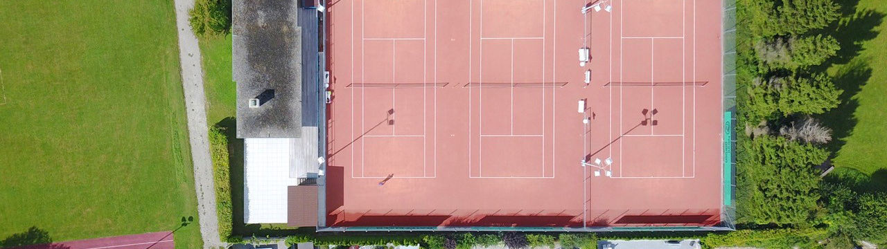
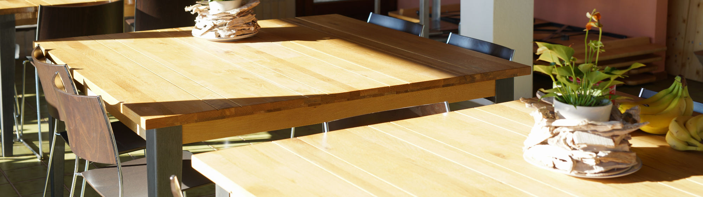
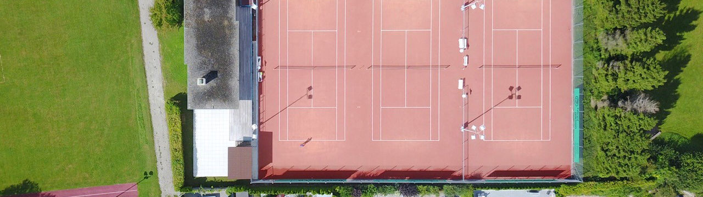
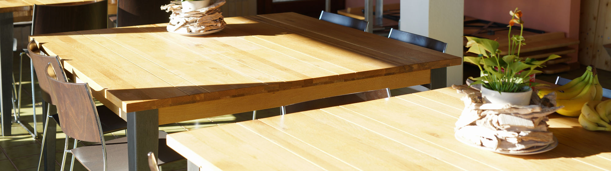

2018
Erstes Jahr nach dem Jubiläum. Neu mit zwei IC Damenteams!
Erstes Jahr nach dem Jubiläum. Neu mit zwei IC Damenteams!
Auf der Platzwartungsliste hat's noch ein paar Lücken. Eine Woche Platzwartung, und schon seid ihr von der Frondienstkaution erlöst ;-).
Die Interclub Spiele finden im Mai und Juni statt.
 



TCB Tennisclub Brütten - im Chapf - 8311 Brütten
Auch im 2018 findet wieder der TCB-Cup statt, wo ihr die Möglichkeit habt, spannende Wettkämpfe mit anderen Mitgliedern zu bestreiten. Die ideale Gelegenheit -
vor allem für Neumitglieder - um weitere SpielpartnerInnen kennenzulernen. Die Spiele finden im Round Robin Modus statt. Anmeldung im Clubhaus bis Ende Mai.
Alle weiteren Infos findet ihr hier

Im November 1976 fand die erste Sitzung des Projektteams TC Brütten statt und bereits wenige Monate später im Juni 1977 wurde der TC Brütten gegründet. Zwei Jahre später konnten die erbauten Tennisplätze für den Spielbetrieb freigegeben werden. Im Sommer 1980 wurde dann auch das Klubhaus fertiggestellt und eingeweiht. Beat Balsiger, Ueli Arn und Christian Fuchs haben als Präsidenten des Clubs die hervorragende Entwicklung des Vereins ermöglicht.
Jahresbeiträge Mitgliedschaft: Einzelperson (CHF 300.-) Ehepaar o.ä. (CHF 450.-) ...
Genaue Informationen
Unser Club ist stolz, Kinder und Jugendliche für den Tennissport begeistern zu können. Entsprechend gross ist die Zahl der Trainierenden in diesen Altersklassen.
Ausgebildete Tennislehrer führen das Training an verschiedenen Tagen auf unseren Plätzen durch.
Dieses Jahr vertreten drei Herrenteams und zwei Damenteams unseren Club bei der Interclub-Meisterschaft.
Auch der TCB-Cup erfreut sich grosser Beliebtheit bei den Mitgliedern des TCB. Jedes Jahr werden ausserdem die Club-Meisterschaften zusammen mit Bassersdorf durchgeführt.
Meisterschaftsresultate ab 2005